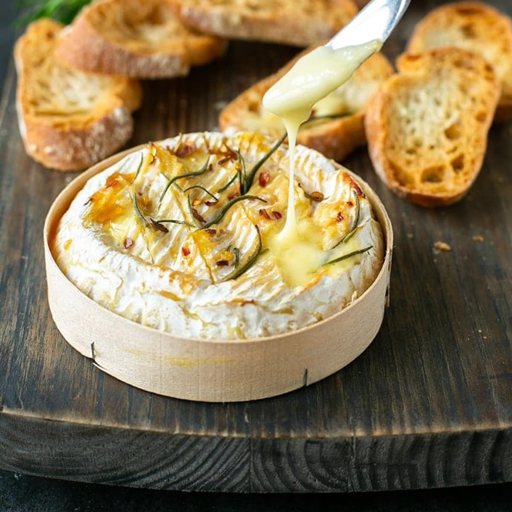

Baked Camembert

Description
This delicious, gooey, baked Camembert dip is impressive enough to serve to guests while being deceptively easy to make. Feel free to experiment with different herb combinations. Serve Camembert immediately out of the oven with toasted baguette pieces for dipping.
Ingredients
- 1 (8ounce) round Camember cheese in wooden box
- 1 clove garlic, sliced or more to taste
- 1 sprig fresh rosemary leaves stripped
- 2 sprigs fresh thyme leaves stripped
- 1 tablespoon olive oil
- Freshly cracked salt and pepper to taste
Steps
- Preheat the oven to 350 degrees F (175 degrees C).
- Remove Camembert from wooden box and remove and discard any plastic wrapping. Place wheel of cheese back into the wooden box.
- Using a sharp knife, score the top of the cheese in a crisscross pattern about 1-inch deep. If desired, remove the top rind.
- Press garlic slices into the scores. Sprinkle with rosemary and thyme leaves, pushing a few into the scores. Drizzle top of Camembert cheese with olive oil and season with freshly cracked salt and pepper. Wrap box with foil to prevent drips (leaving the top open) and place on a baking sheet.
- Bake in the preheated oven for 15 minutes. Remove from the oven and remove the foil. Serve the cheese in its box immediately.
Home